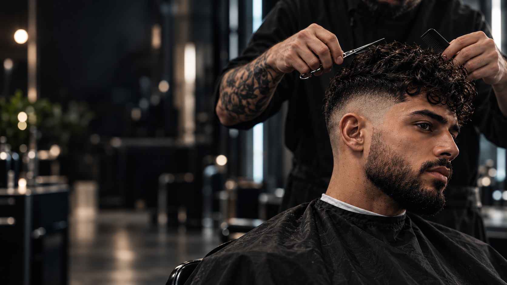
01-hero/hero-desktop.png
Fundo de abertura desktop, atendimento à direita e espaço para título à esquerda.
1672 × 941 px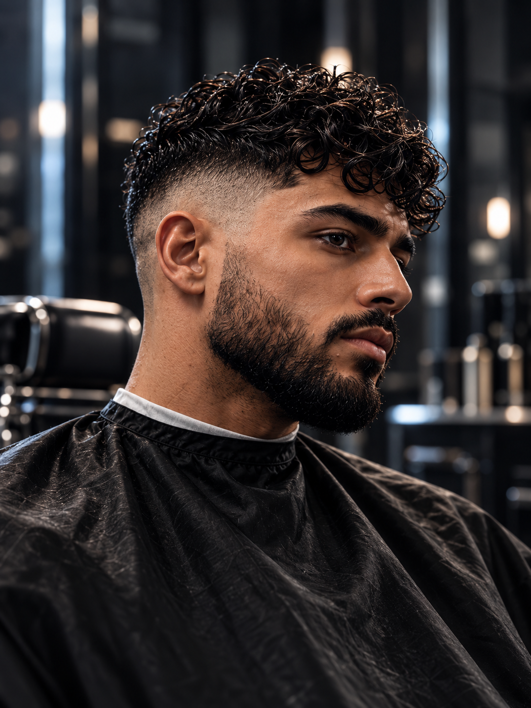
03-galeria/look-01-signature-fade.png
Retrato final do Hero e primeiro cartão de cortes.
1086 × 1448 px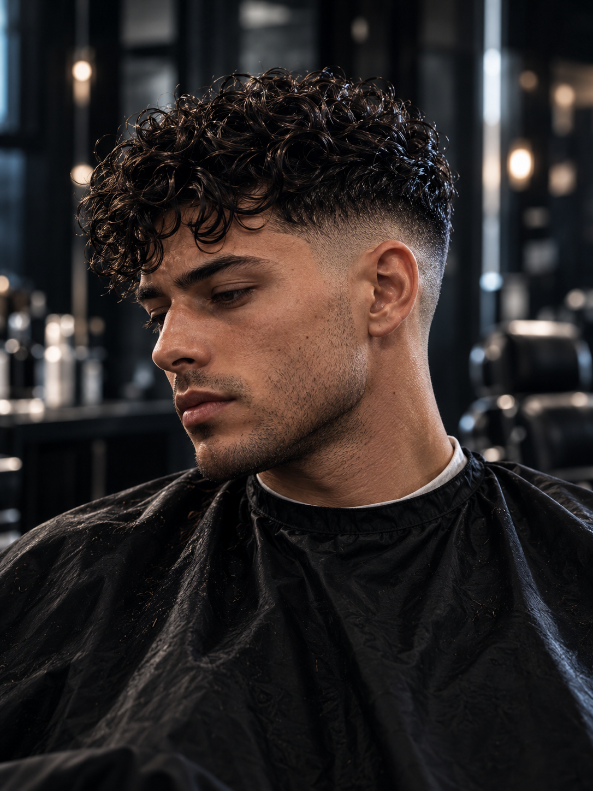
03-galeria/look-02-texture-perms.png
Galeria de textura e cachos, referência visual para haircut & perms.
1086 × 1448 px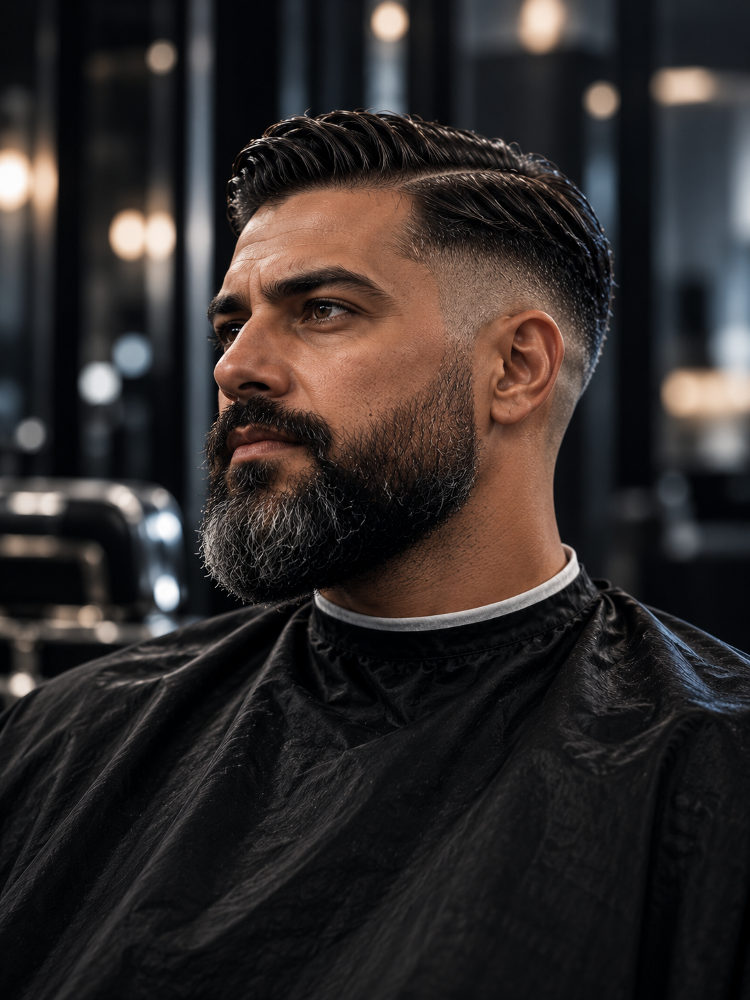
03-galeria/look-03-haircut-beard.png
Galeria de corte clássico e barba.
1086 × 1448 px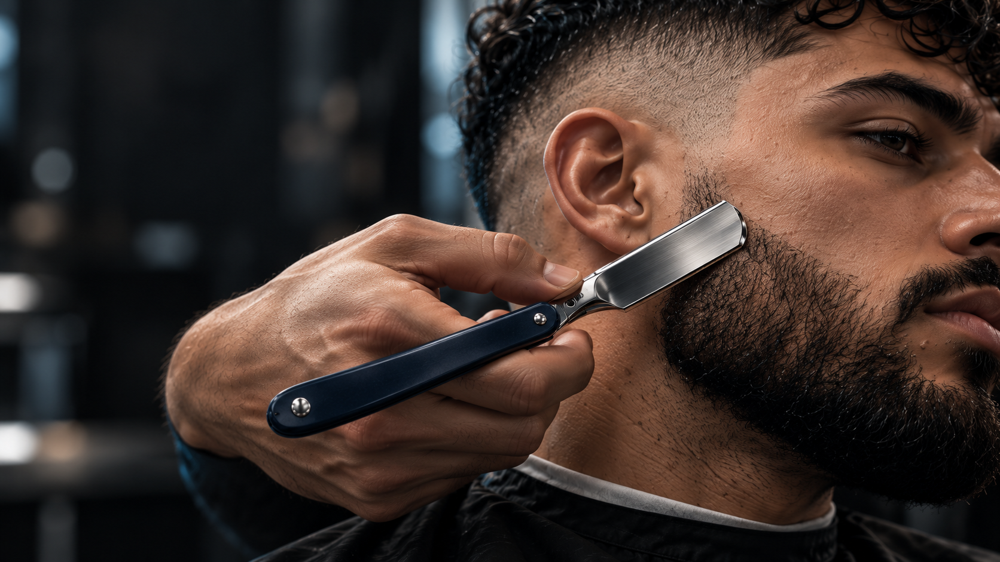
04-secoes/craft-acabamento.png
Detalhe do acabamento para a seção The craft.
1672 × 941 px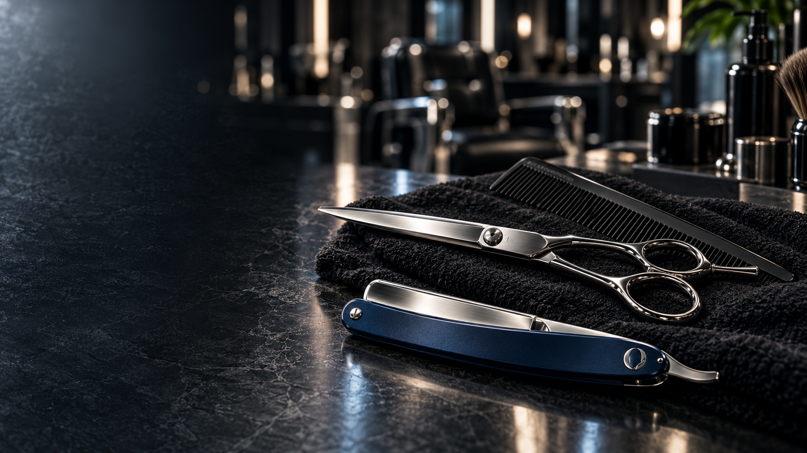
04-secoes/servicos-ferramentas.png
Ferramentas para composição do bloco de serviços.
1672 × 941 px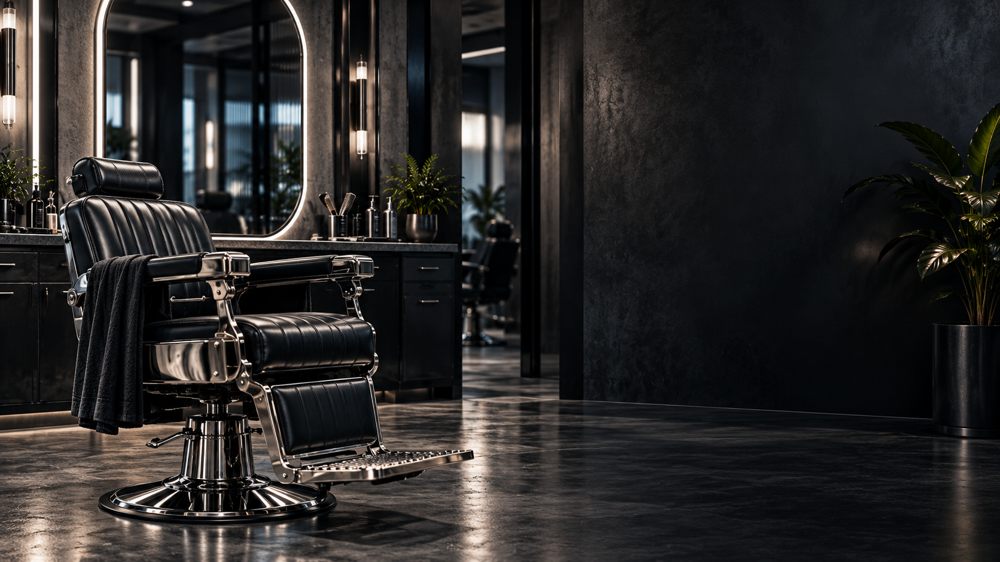
04-secoes/ritual-cadeira-espelho.png
Seção do ritual, cadeira e espelho oval.
1672 × 941 px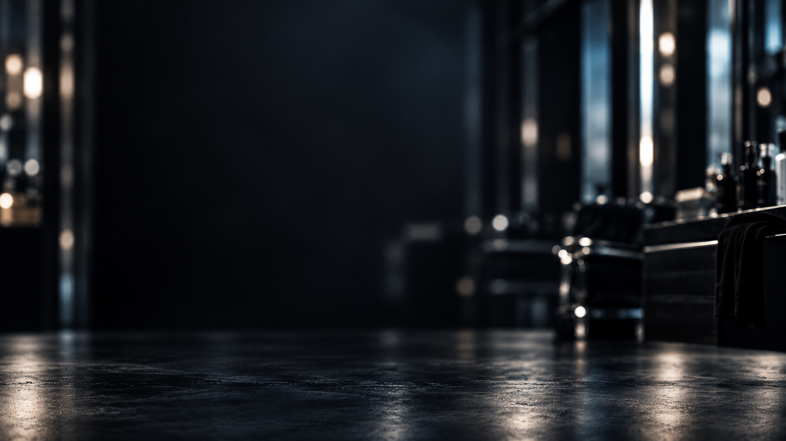
01-hero/fundo-grafite.png
Fundo discreto para transições, peças transparentes e contato.
1672 × 941 px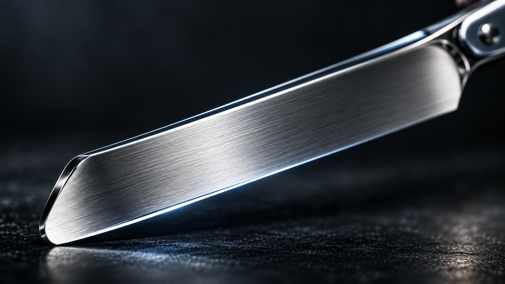
02-animacao/macro-fio-navalha.png
Plano macro para a passagem do contorno do fade ao metal.
1672 × 941 px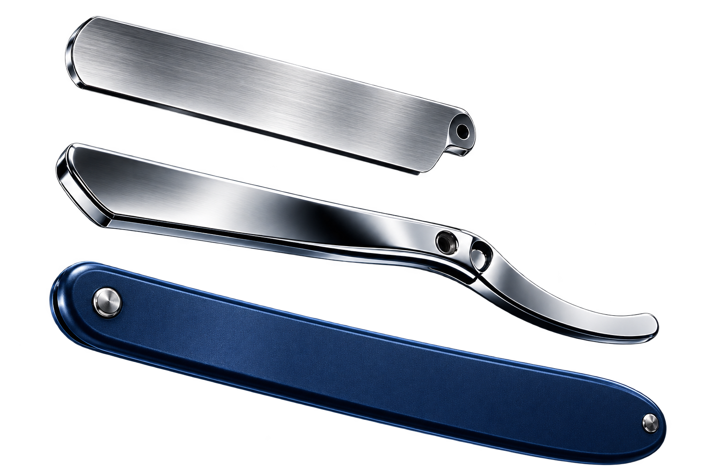
02-animacao/navalha-explodida.png
Navalha em três camadas transparentes, referência de posição aberta.
1536 × 1024 px · alpha transparente01-hero/hero-mobile.png
Hero com enquadramento vertical e espaço superior para títulos no celular.
1086 × 1448 px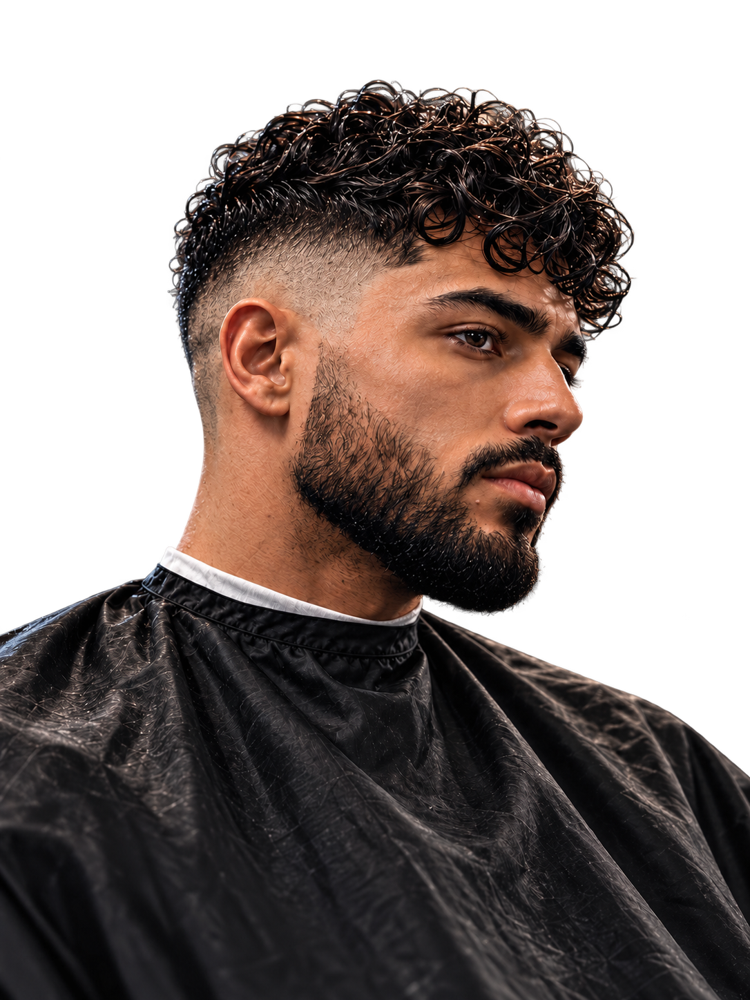
02-animacao/retrato-final-transparente.png
Retrato recortado para a revelação pelo O e encaixe na galeria.
1086 × 1448 px · alpha transparente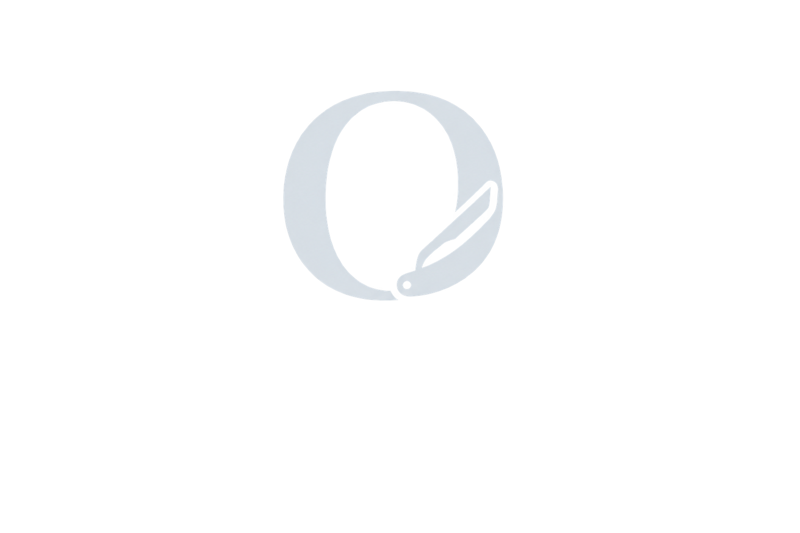
05-marca/monograma-o-transparente.png
Monograma O para sobreposição e transição à galeria
1536 × 1024 px · alpha transparente05-marca/orhan-logo-transparente.png
Logo ORHAN aprovado, em PNG transparente
1536 × 1024 px · alpha transparente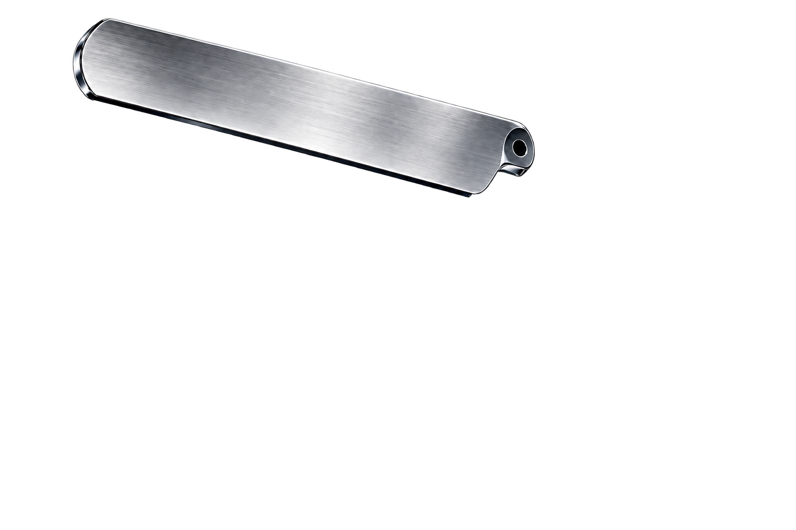
02-animacao/lamina.png
Lâmina isolada para a separação por scroll
1536 × 1024 px · alpha transparente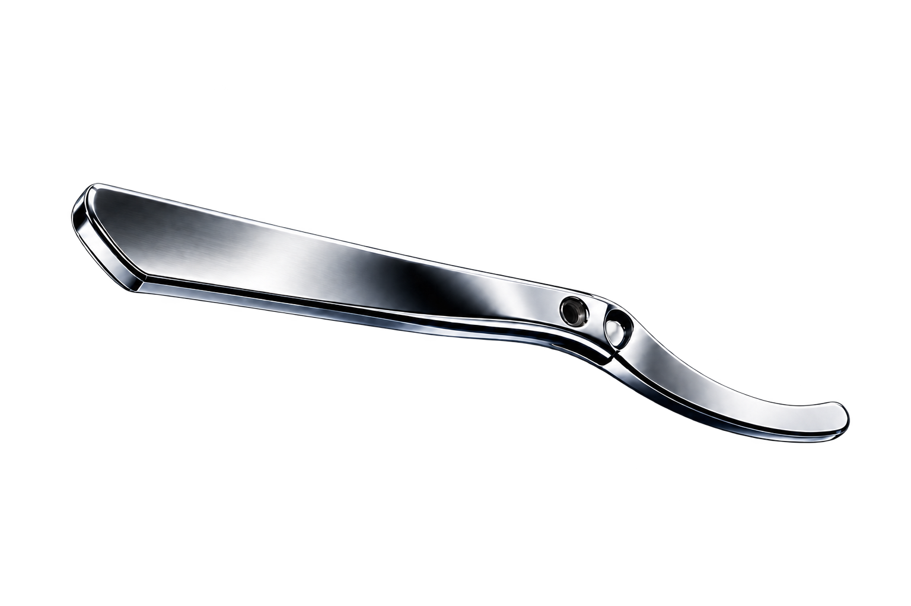
02-animacao/suporte.png
Suporte cromado isolado para a separação por scroll
1536 × 1024 px · alpha transparente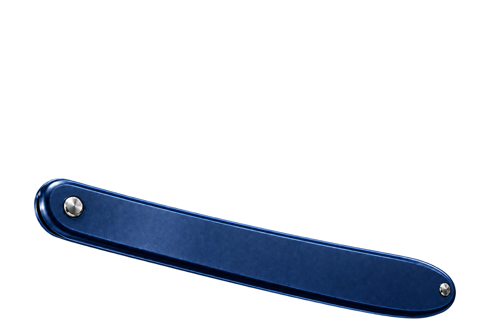
02-animacao/cabo.png
Cabo azul-marinho isolado para a separação por scroll
1536 × 1024 px · alpha transparente
02-animacao/navalha-montada.png
Navalha aberta montada, estado inicial e final da composição
1536 × 1024 px · alpha transparente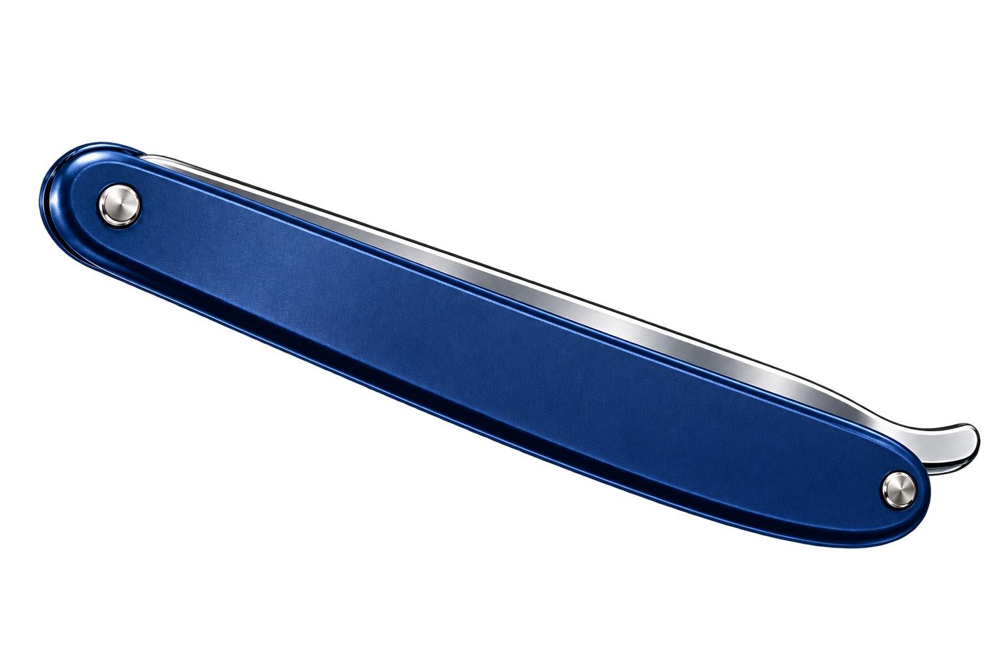
02-animacao/navalha-fechada.png
Navalha recolhida para a transição de encerramento
1536 × 1024 px · alpha transparenteFotografias conceituais. Assets raster para animar por camadas; não são um vídeo ou modelo 3D.